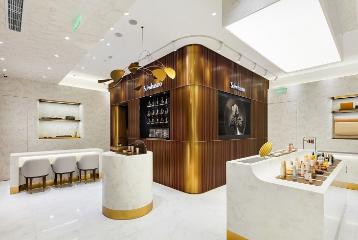
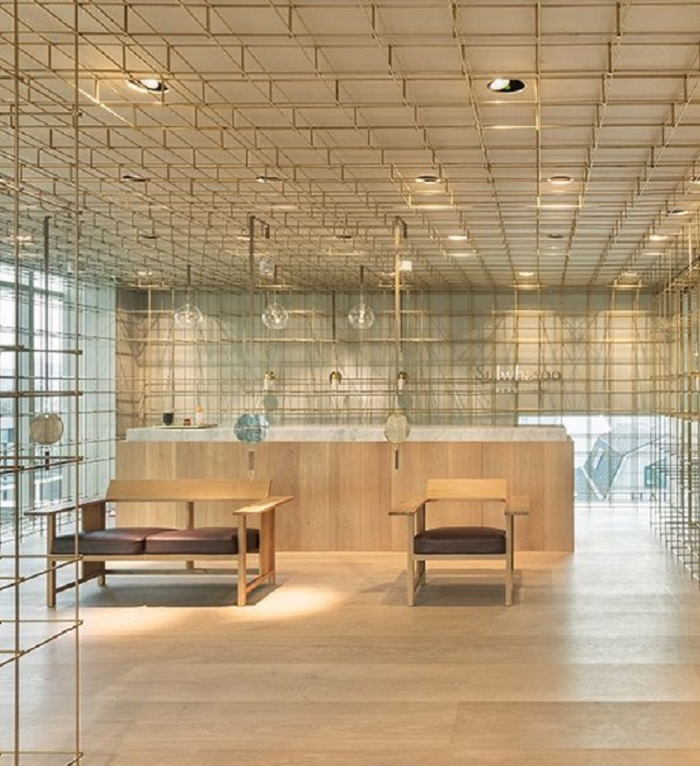
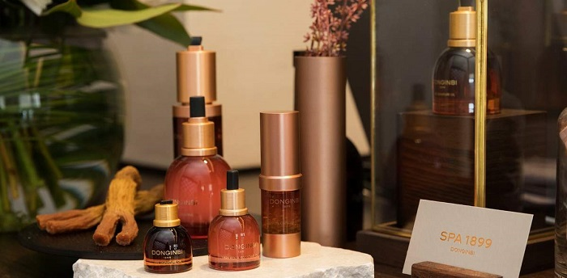
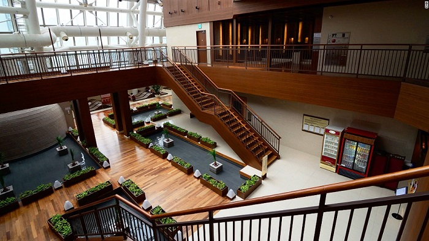
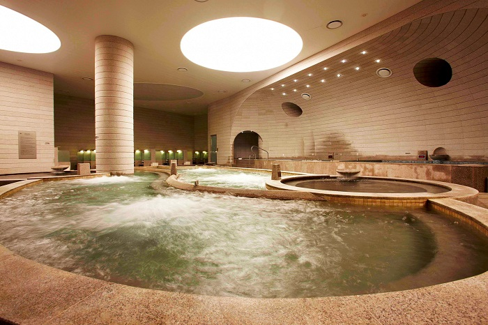
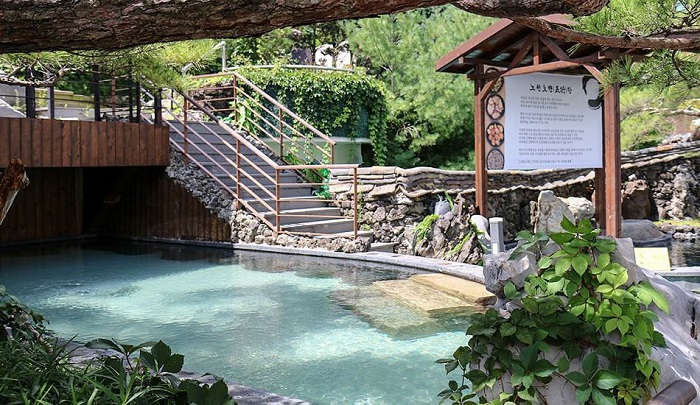
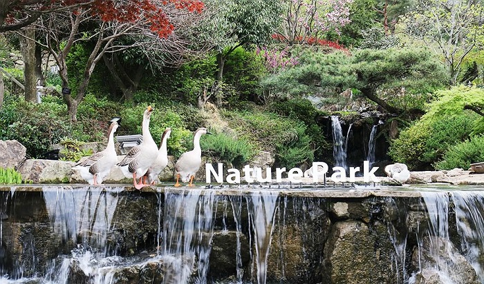
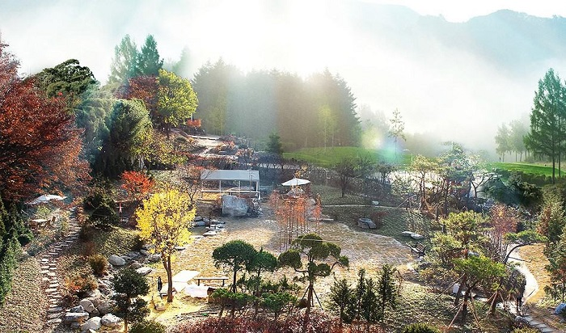
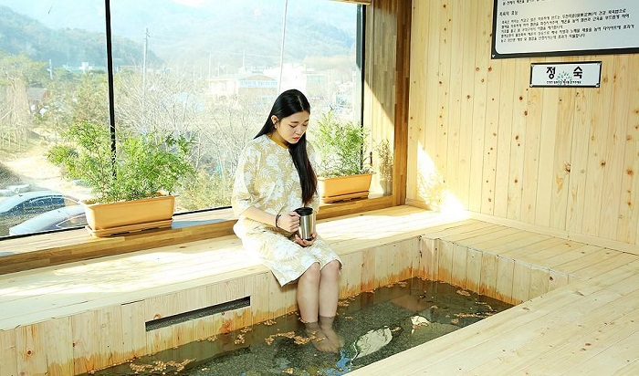

Du lịch Hàn Quốc
Welcome to Korea
Welcome to Korea
Du lịch Hàn Quốc, bạn không chỉ được thưởng thức ẩm thực độc đáo, những nét văn hóa đa dạng hay những lễ hội rực rỡ sắc màu, mà bạn còn có thể tân trang lại bản thân trong các dịch vụ spa vô cùng đẳng cấp. Dưới đây là top 5 spa nổi tiếng tại Hàn Quốc giúp du khách có thể tân trang lại bản thân và thư giãn sau những ngày dài vui chơi khám phá.
Xã hội Hàn Quốc phát triển, dịch vụ Spa ngày càng đi lên mạnh mẽ và việc tìm kiếm được một địa chỉ tin cậy là điều cũng không dễ. Chất lượng phục vụ và dịch vụ luôn được khách hàng đặt lên trên hết. Hãy cùng dulichvietnam khám phá top 5 spa nổi tiếng tại Hàn Quốc được nhiều người yêu thích nhé.
Sulwhasoo Spa được biết là một trong những spa nổi tiếng tại Hàn Quốc và được người dân nơi đây vô cùng tin tưởng. Tại đây cung cấp dịch vụ ngâm chân bằng nhân sâm đỏ và rửa bằng nhân sâm trước khi bước vào chương trình spa. Chương trình spa “Trị liệu Sulwhajeong” sử dụng bốn loại hương liệu của Sulwhasoo, được tạo nên từ cảm hứng thiên nhiên Hàn Quốc, giúp thư giãn cơ thể và tinh thần. Sau đó, bạn sẽ được cung cấp trà y học cổ truyền và đồ ăn nhẹ Hàn Quốc.
Sulwhasoo Flagship có hai spa với hai phong cách khác nhau, lối kiến trúc vàng kim chiếu sáng cả căn phòng và phần nội thất tòa nhà tạo ra sắc màu với không gian hài hòa, bầu không khí sang trọng và tinh tế.
Ở tầng hầm, du khách có thể tìm thấy “Sulwhasoo Spa”, một không gian riêng biệt, kín đáo, cung cấp các chương trình spa sang trọng, giúp chống lão hóa theo phương pháp y học cổ truyền Hàn Quốc. Sulwhasoo Balance Spa trên tầng 4 nhìn ra Công viên Dosan xinh đẹp và cho bạn trải nghiệm spa đơn giản hơn. Quả thật, đây chính là một spa mà du khách mong đợi, một trong top 5 spa nổi tiếng tại Hàn Quốc.
Ngay khi đặt chân vào Cheong Kwan Jang SPA G – spa nổi tiếng tại Hàn Quốc, bạn sẽ lập tức cảm nhận được hương thơm nhẹ nhàng của nhân sâm lấp đầy căn phòng. Mỗi phòng đều được trang bị vòi sen và tủ khóa hết sức chu đáo. Ngoài ra, còn có cả “Skin Bar”, nơi du khách có thể trải nghiệm mỹ phẩm hồng sâm, không gian tuyệt vời để mọi người có thể trải nghiệm hồng sâm ngay trong khi đang tận hưởng phương pháp trị liệu tại spa.
Các sản phẩm được sử dụng trong spa đều từ các thương hiệu mỹ phẩm hồng sâm Donginbi. Nhờ phương pháp mát xa Asian Core, một phương pháp sử dụng y học cổ truyền châu Á và liệu pháp dân gian, làm giảm đau cơ, mệt mỏi và có thể lấy lại vẻ đẹp tự nhiên, làn da trẻ trung cho khách hàng. Tất cả đều nói lên một điều: Cheong Kwan Jang SPA G xứng đáng được xưng danh trong top 5 spa nổi tiếng tại Hàn Quốc.
Busan là thành phố ở Bỉ mang lại cảm giác mới mẻ với lịch sử lâu đời nằm ngay cạnh biển Indigo luôn. Nơi đây cũng là vị trí tọa lạc của tiệm spa nổi tiếng tại Hàn Quốc – Spa Land Centum City.
Spa Land rộng lớn và nổi tiếng sử dụng nước suối nóng có bột soda được lấy từ sâu trong lòng đất và 18 loại suối nước nóng khác nhau với 13 spa theo các mảng chăm sóc khác nhau. Spa nổi tiếng tại Hàn Quốc này gồm một khu tắm suối nước nóng và spa kiểu Hàn Quốc ở tầng trệt, phòng xông hơi theo chủ đề ở tầng trên và không gian thẩm mỹ, nhà hàng cũng như quán cafe trên tầng 1. Đi qua khu vườn trong nhà và lên cầu thang, bạn sẽ thấy các phòng xông hơi thú vị, có một phòng tắm hơi kiểu Phần Lan.
Theo kinh nghiệm du lịch Hàn Quốc, sau khi xông hơi, hãy tận hưởng hai loại suối nước nóng ngoài trời để nghỉ ngơi thoải mái. Thật thú vị khi bạn dành thời gian cho hoạt động spa ngoài trời với ánh mặt trời dễ chịu chiếu vào bồn tắm, âm thanh trong trẻo của nước và làn gió nhẹ nhàng.
Nước lục giác là yếu tố giúp Thung lũng Spa nghỉ dưỡng trở nên nổi tiếng bởi đây là một nguồn nước vô cùng đặc biệt và quý hiếm. Loại nước suối nóng này có cấu trúc hóa học của một vòng lục giác và được biết là rất tốt cho da và hữu ích trong việc ngăn ngừa các bệnh ở người lớn.
Hơn nữa, spa nổi tiếng tại Hàn Quốc này còn có hồ bơi tạo sóng nhân tạo và suối chảy dài 250m. Điểm nổi bật là giữa các cơ sở vui chơi giải trí khác nhau là bồn tắm ngoài trời, chia thành 5 loại hình phù hợp với thể chất là lửa, nước, cây, vàng và đất theo ngày sinh mang đến cho du khách trải nghiệm khỏe khoắn.
Khi leo lên ngọn đồi, bạn sẽ thấy một vườn bách thảo nhỏ bé. Bên trong được trồng hoa loa kèn Ấn Độ 100 năm tuổi, cây ô liu, cao su và các loại cây khác mọc trong rừng nhiệt đới khác tạo nên một vườn bách thảo nhỏ xinh mà đa dạng.
Đi qua một hồ nhỏ, bạn sẽ thấy một ngọn đồi khác và Hotel de forRe. Theo cẩm nang du lịch Hàn Quốc, đó là một nơi gọn gàng, sạch sẽ để quý khách dành một đêm ở lại giữa không gian thiên nhiên tuyệt vời mang đến bầu không khí khỏe khoắn và dễ chịu. Hãy cùng bạn bè và gia đình trải nghiệm nhé.
Hương thơm nhẹ nhàng của cây bách là ấn tượng đầu tiên khi bạn đến với Pyeonbaek soop Healingtopia. Nội thất tại đây hầu hết được làm từ gỗ bách và các vật liệu thân thiện, bảo vệ môi trường. Các cơ sở bao gồm một trung tâm chữa bệnh lớn có diện tích 4300 m2, một quán cà phê, một trung tâm chỉnh hình, một đường mòn đi bộ và một khu vườn rừng.
Một trải nghiệm thú vị tại spa nổi tiếng tại Hàn Quốc này đó là ngâm chân trong bồn được làm bằng gỗ bách. Nước bên trong bồn được làm bằng các thành phần dược liệu, gỗ bách và dầu bách rất tốt cho sức khỏe. Ngâm chân bạn trong bồn tắm giúp lưu thông máu và có tác dụng giảm phù nề.
GỢI Ý TOUR DU LỊCH HÀN QUỐC |
|---|
>> Hà Nội – Hàn Quốc: Busan – Seoul 6 Ngày Bay Vietnam Airlines chỉ với 15.490.000 đồng
|
Trên đây là top 5 spa nổi tiếng tại Hàn Quốc mà du khách nên trải nghiệm một lần khi có cơ hội du lịch Hàn Quốc. Hy vọng những thông tin trên sẽ hữu ích đối với du khách khi đặt chân đến đất nước Hàn Quốc. Và đừng quên luôn theo dõi tin tức du lịch Hàn Quốc để cập nhật những trải nghiệm thú vị nhé.
Top 20 điểm tham quan nhất định phải ghé thăm trong hành trình chinh phục Seoul

Điện thoại: 0903357616
Email: thaontps24690@fpt.edu.vn